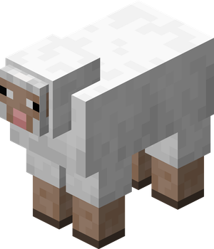
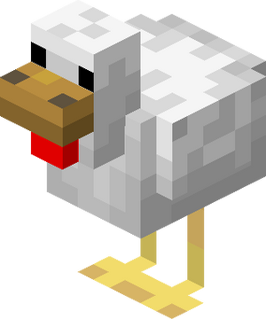

Vaca

A vaca é um mob passivo que fornece couro, leite e carne bovina. Ela pode ser ordenhada com um balde e reproduzida utilizando trigo.
Página por Davi Sobral
Os mobs são entidades vivas presentes em Minecraft que interagem com o ambiente e com os jogadores. Cada mob possui características, habilidades e comportamentos próprios, desempenhando um papel importante na sobrevivência e na exploração do jogo.
Os mobs passivos são criaturas que não atacam o jogador em nenhuma situação. Eles fornecem recursos importantes para a sobrevivência.
A vaca é um mob passivo que fornece couro, leite e carne bovina. Ela pode ser ordenhada com um balde e reproduzida utilizando trigo.

A ovelha fornece lã e carne. Sua lã pode ser tosquiada e utilizada para fabricar camas, tapetes e bandeiras.

A galinha produz ovos, penas e carne. Os ovos podem ser usados em receitas ou para gerar pintinhos.

O porco fornece carne suína e pode ser montado utilizando uma sela e uma cenoura em uma vara.
Em desenvolvimento...
Em desenvolvimento...
Em desenvolvimento...